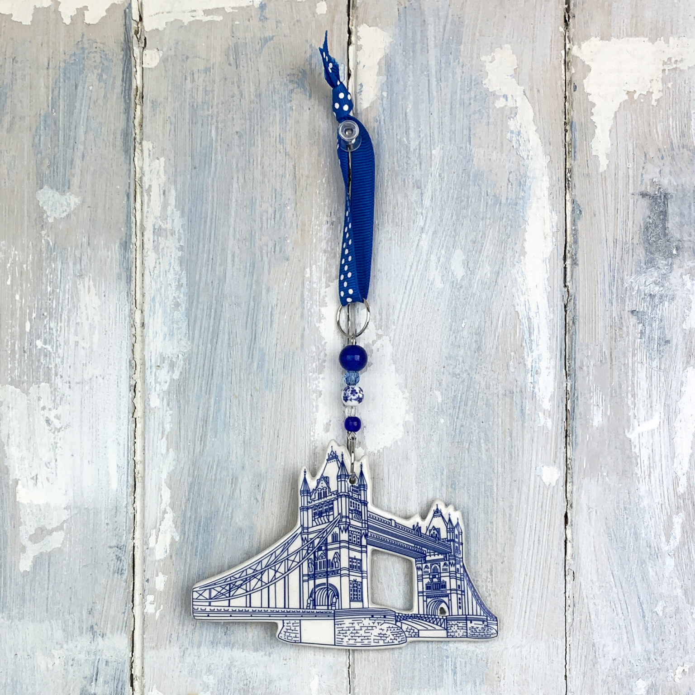

A handmade ceramic hanging decoration capturing one of London’s most iconic landmarks. Each piece is individually shaped, painted and glazed in our Berkshire studio, with fine brushwork detailing the bridge’s distinctive Victorian Gothic towers and walkways. Created as an bespoke for Historic Royal Palaces, the design features the bridge in traditional Delft blue, finished with hand-threaded ceramic beads and a ribbon for hanging.
This bespoke decoration is available from the venue below. Please contact the retailer directly for availability and purchasing.
Venue
Tower of London Gift Shop
Address
London, EC3N 4AB